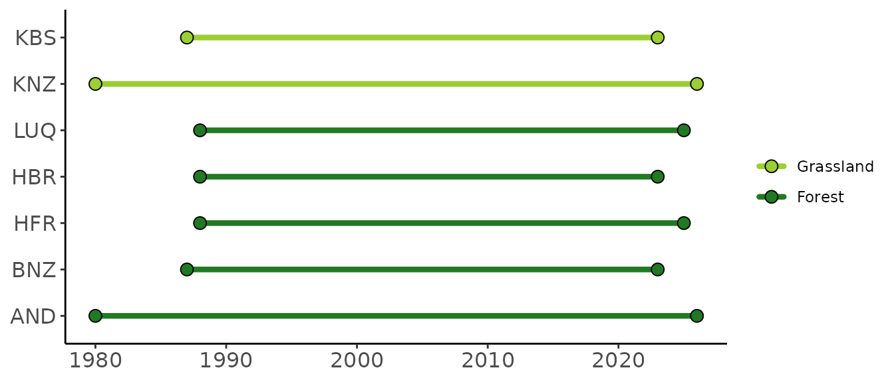
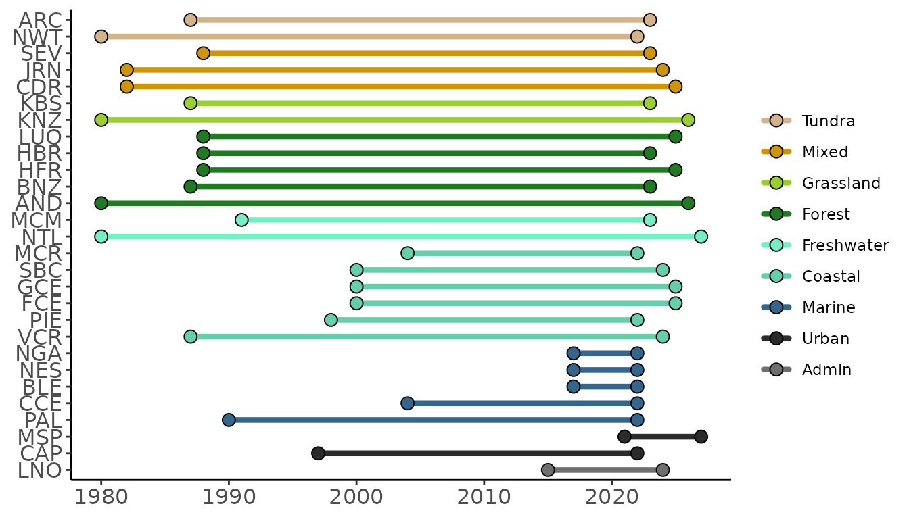

Overview
The ltertools package
The goal of ltertools is to centralize the R functions
created by members of the Long Term Ecological Research (LTER)
community. Many of these functions likely have broad relevance that
expands beyond the context of their creation and this package is an
attempt to share those tools and limit the amount of “re-inventing the
wheel” that we each do in our own silos.
The conceptual theme of functions in ltertools is
necessarily broad given the scope of the community we aim to serve. That
said, the identity of this package will likely become more clear as we
accrue contributed functions. This vignette describes the main functions
of ltertools as they currently exist.
LTER Information
The LTER Network is composed of many separate sites. While all of
these sites are “long term” they do vary slightly in when they were
created. For those interested in knowing the temporal coverage of data
from a particular site or group of sites, site_timeline can
prove a helpful function. This function creates a ggplot2
timeline where sites are on the vertical axis and years are on the
horizontal. Lines are colored based on the habitat of the site and there
is support for a user-defined set of hexadecimal colors though by
default an internal palette is used.
Sites can be specified by their three letter site code or all sites in a particular habitat can be included.
# Check the timeline for all grassland or forest LTER sites
ltertools::site_timeline(habitats = c("grassland", "forest"))
Running the function without specifying site codes or habitat types will result in a timeline of all active LTER sites.
# Check the timeline for all LTER sites
ltertools::site_timeline()